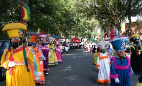
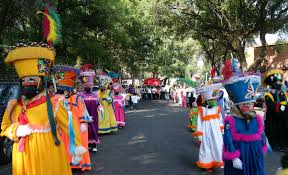
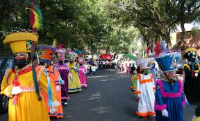

Tradiciones de la Ciudad
 

Algunas de las costumbres más representativas incluyen la celebración del Día de Muertos, las fiestas patronales y las peregrinaciones religiosas.

Algunas de las costumbres más representativas incluyen la celebración del Día de Muertos, las fiestas patronales y las peregrinaciones religiosas.